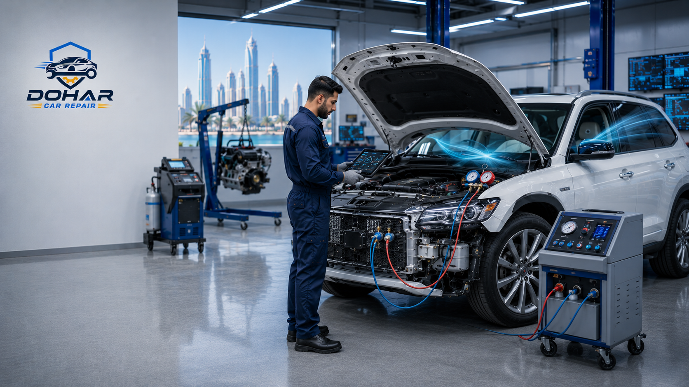
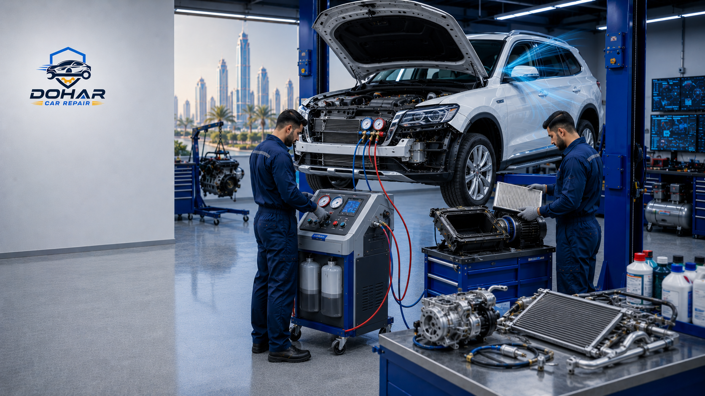

In Qatar's extreme summer heat — where temperatures regularly exceed 45°C — a functioning car AC system is not a luxury, it's a necessity. A faulty or weak air conditioning system can make driving dangerous and unbearable. Whether your AC blows warm air, makes strange noises, or simply stopped working, this complete guide to car AC repair in Doha, Qatar will help you understand the problem and find the right solution.

Why Car AC Fails Faster in Qatar
Qatar's climate is one of the harshest on car AC systems in the world. The combination of extreme heat, high humidity near the coast, and constant heavy use puts enormous stress on every component of your vehicle's air conditioning system.
- Extreme Heat Load: Summer temperatures above 45°C force the AC compressor to work non-stop, causing rapid wear
- Constant Usage: Unlike colder countries, Qatar drivers run the AC 10–12 months a year with no break for components to rest
- Refrigerant Loss: Heat accelerates micro-leaks in hose connections, losing refrigerant faster over time
- Condenser Stress: Parking in direct sunlight bakes the condenser coils, reducing efficiency and lifespan
- Dust Blockage: Sand and dust clog cabin air filters and evaporator coils, reducing airflow significantly
Qatar AC Fact
In Qatar's summer, a car parked in direct sunlight can reach interior temperatures of 70°C–80°C. This means your AC must cool the cabin by 50°C+ every time you start driving — double the workload compared to European climates.
Common Car AC Problems in Qatar
These are the most frequent AC issues our technicians see at Dohar Car Repair:
1. AC Blowing Warm or Weak Air
The most common complaint. Usually caused by low refrigerant due to a slow leak, a failing compressor, or a blocked expansion valve. In Qatar's heat, even a 20% drop in refrigerant makes the AC feel almost useless.
2. AC Compressor Not Working
The compressor is the heart of your AC system. It can fail due to overuse, electrical faults, or low oil levels. Signs include a clicking noise when you turn on the AC, or the AC not engaging at all.
3. Refrigerant Leak
Refrigerant (usually R-134a or the newer R-1234yf) leaks from cracked hoses, loose fittings, or a damaged condenser. Just recharging without fixing the leak is a temporary fix — the refrigerant will escape again within weeks.
4. Bad Smells from the AC Vents
A musty or sour smell when you turn on the AC indicates mold and bacteria growing on the evaporator coil. This is very common in Qatar because the high humidity causes moisture buildup inside the cabin unit.
5. AC Making Noise
Rattling, squealing, or grinding sounds from behind the dashboard or under the hood point to a worn blower motor, loose components, or a failing compressor bearing.

Signs Your Car AC Needs Service Right Now
-
Air Is Not Cold Enough
If the vents blow air that feels only slightly cool even on maximum setting, your refrigerant is low or the compressor is weak.
-
AC Takes Too Long to Cool the Car
It's normal to wait 2–3 minutes in Qatar's heat, but if it takes 10+ minutes to feel comfortable, the system needs inspection.
-
Unusual Clicking or Squealing Sounds
Noises when switching on the AC suggest the compressor clutch or blower motor is failing.
-
Bad or Musty Smell
Bacterial growth on the evaporator is a health hazard and needs professional cleaning or replacement of the cabin air filter.
-
Water Dripping Inside the Cabin
A blocked condensate drain pipe causes water to drip onto the floor instead of draining outside the car.
-
AC Turns On and Off Randomly
Electrical faults, a faulty AC pressure switch, or overheating components can cause erratic on/off behavior.
What Our Car AC Repair Service in Doha Includes
At Dohar Car Repair, our AC technicians follow a comprehensive process to fully restore your car's cooling system:
Step 1 — AC System Diagnosis
We use electronic leak detection tools and manifold gauges to check refrigerant pressure, identify leaks, and test all electrical components including the compressor clutch, pressure switches, and blower motor.
Step 2 — Refrigerant Recovery & Recharge
We safely recover old refrigerant using EPA-compliant equipment, vacuum the system to remove moisture and air, then recharge it with the correct amount of refrigerant for your vehicle's specifications.
Step 3 — Leak Repair
All leaks are repaired before recharging — whether it's replacing hoses, O-rings, the condenser, or evaporator. We never mask a leak with sealant additives.
Step 4 — Compressor Service or Replacement
We service or replace faulty compressors using quality parts matched to your vehicle, and always flush the system to remove metal debris before installing a new compressor.
Step 5 — Cabin Air Filter Replacement
We replace the cabin air filter and clean the evaporator coil to remove mold, bacteria, and dust buildup — restoring airflow and eliminating bad smells.
"A proper AC repair is not just a refrigerant top-up. Our team fixes the root cause so your AC stays cold all summer. We never cut corners — especially in Qatar's climate where your AC is your lifeline."
Car AC Service Cost in Qatar
Here is a general price guide for car AC services in Doha. Actual costs depend on your vehicle make and model:
- AC Diagnosis / Inspection: 150–250 QAR
- Refrigerant Recharge (R-134a): 200–400 QAR
- AC Compressor Replacement: 800–2,500 QAR (parts + labor)
- Condenser Replacement: 600–1,800 QAR
- Evaporator Coil Service / Cleaning: 400–900 QAR
- Cabin Air Filter Replacement: 80–200 QAR
- AC Leak Repair (hoses/O-rings): 200–600 QAR
- Full AC System Service: 1,000–3,500 QAR depending on scope
Save Money Tip
Get your AC inspected before summer starts in Qatar (March–April). Early service is cheaper than emergency repairs during peak heat. A preventive recharge and filter change can save you thousands in compressor replacement costs later.
How to Maintain Your Car AC in Qatar
Extend the life of your car's AC system with these expert-recommended practices:
- Run AC on Maximum 1–2 Minutes Before Driving: Let the car interior breathe before switching to recirculation mode
- Use Windshield Sunshades: Reduces interior temperature and AC load by up to 15°C
- Park in Shade When Possible: Significantly reduces compressor stress
- Replace Cabin Air Filter Every 6 Months: Qatar's dust clogs filters faster than normal
- Annual AC Service: Full check, refrigerant top-up, and leak inspection every year in Qatar
- Don't Turn AC to Maximum Immediately: Let the fan run a few seconds first to push hot air out before activating cooling
Why Choose Dohar Car Repair for Your AC Service?
When your car AC fails in Qatar's heat, you need it fixed right — and fast. Here's why customers across Doha trust us:
- Specialist AC Technicians: Our team is trained specifically in automotive air conditioning systems
- Electronic Leak Detection: We find leaks other shops miss using professional-grade tools
- All Vehicle Makes & Models: Japanese, European, American, Korean — we service them all
- Quality Parts with Warranty: All compressors and major parts come with warranty coverage
- Transparent Pricing: We diagnose first, then quote — no surprise bills
- Fast Turnaround: Most AC jobs completed same day
- 15+ Years Experience: Serving Doha drivers since 2009
AC Not Working? Call Us Now
Don't suffer in Qatar's heat with a broken AC. Contact Dohar Car Repair at 0097472223959 or WhatsApp us for a same-day appointment and free AC diagnosis quote.